20 candidates for Emmet's technique library (session 3D, H-26). Each was found in your instruction books and ranked by how widely official models in the LDraw OMR join its key parts (1315 sets mined). Each picture is a render of my sketch of it in Emmet's DSL, which validates with no findings; an accepted sketch becomes the technique, with its tests and render, and a rejected one is dropped. Nothing is taken from the models' files or the books' pages (D-48). Every candidate starts as Accept: switch the ones you don't want, add a note if it helps, then copy your answers and paste them to Claude.
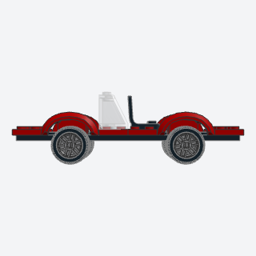
car_wheelsa car's two axles of real rims and tires, tucked into wheel arches on the body's sides.
Any car, van, or truck at figure scale: the running gear that makes it read as a road vehicle, its wheels at the body's sides under arches, sized by the width class.
Note: How it differs from the rejected wheel_axle and wheel_arch: no 4870 (whose pins hang 3 plates below the plate, so the small 4624 wheels dangled under a flat plate like landing gear). The pins here are flush (4600, or two 4488 for 6 and 8 wide), the wheel is a 14 mm rim with a 21 mm tire (11209, about 2.6 studs across) standing at the body's side, and a mudguard whose arch wraps the tire's top (98282, or the taller 50745 at 8 wide) sits on a 2-wide spine, so the side view is a tire in a wheel well. The holders sit a whole 4 plates up and the wheels ride 0.75 LDU low on their pins (inside the 1 LDU joint tolerance), so the tires touch z and the deck is on the plate grid. Widths 6 and 8 validate too (checked at wheelbase 10 and 12). The exact holders and mudguards in the books were not confirmed part by part.
x, y, z, width, wheelbase, overhang, color, chassis, rimbatch-13/car_wheels.py4600 + 4488 + 11208 + 11209 + 98282 (some of its parts weren't confirmed from the book; I'd pin them when writing it)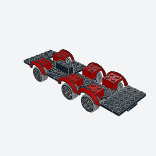
truck_spine_chassisa 6-wide city truck's frame, a 2-wide spine with the axles under it, widened by plates laid across and locked by a keel brick.
The base of every 6-wide city truck: a stiff spine with the axles and arches built in, ready for a cab on the front and a bed behind.
Note: VARIANT of spliced_chassis: there two wide plates are spliced; here a 2-wide spine carries the axles and plates laid across widen it, with a keel brick over the spine's joint. Uses the same wheel unit as car_wheels at 6 wide; axles=3 gives a tandem rear (the alternate semi_tractor_frame folds in here). Checked at lengths 16, 20, 22, 26.
x, y, z, length, axles, color, arch, rimbatch-13/truck_spine_chassis.py4488 + 98282 + 3795 + 3008 (some of its parts weren't confirmed from the book; I'd pin them when writing it)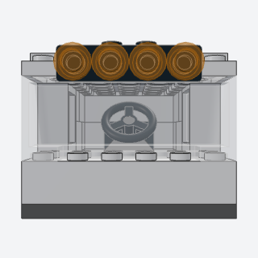
six_wide_truck_caba city truck's cab for one figure, a full-width windscreen on a dash, side windows, and a roof with a light bar that lifts off.
The cab of a city truck, van, or tow truck: one seated figure behind a full-width windscreen, with a roof that lifts off and a light bar.
Note: VARIANT that combines cab_seat, light_bar (both called through m.use) and a 6-wide windscreen. The book's doors (1 x 3 x 2 on rails) are left out: their hinges have no connector data; side windows stand in the door bays.
x, y, z, color, glass, roof, lampsbatch-13/six_wide_truck_cab.py4176 + 2456 + 60592c01 + 3036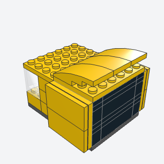
cab_over_sleepera semi-truck's tall sleeper behind its cab, smooth sides built as flat panels stood on side studs, and a rounded roof fairing that lifts off.
The tall sleeper and rounded roof fairing behind a semi-truck's cab, the part that makes a tractor unit read as long-haul.
Note: Uses the sideways_built_wall_panel method: 1 x 4 side-stud bricks two plates apart give studs 2 studs apart vertically, and a 4 x 4 plate on its side, tiled, is the smooth panel. The book stands its panels on clips and rounds the fairing with 2 x 4 and 1 x 4 curved slopes; here three 4 x 2 curved slopes (93606).
x, y, z, color, trim, fairingbatch-13/cab_over_sleeper.py30414 + 3031 + 93606 (some of its parts weren't confirmed from the book; I'd pin them when writing it)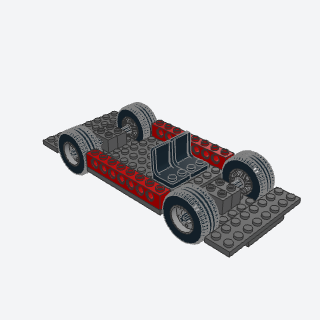
racing_scale_basean 8-wide car's low, stiff floor, wheels on short axles through Technic bricks, Technic sills along the cabin, and two seats side by side.
The floor of any 8-wide racing-scale replica: low, stiff, wheels at the full track, Technic sills to pin side skirts to, two seats.
Note: Wheels are the 18 mm axle-hole rim (55982) and 30 mm low tire (58090) on an axle 8: the book's 8-wide wheels (18976/18977) have no connector data here. Checked at wheelbase 8 to 16.
x, y, z, length, wheelbase, color, sill, rimbatch-13/racing_scale_base.py32064b + 3707 + 55982 + 58090 + 3702 (some of its parts weren't confirmed from the book; I'd pin them when writing it)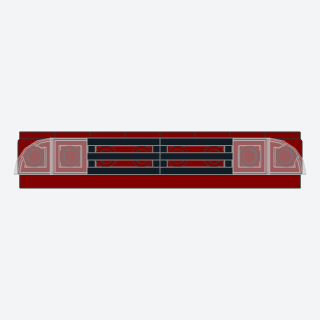
quarter_tile_headlightsthe slim swept lights of a racing-scale car's nose, clear tiles with a rounded outer corner on brackets facing the front, a grille between them.
The slim, swept headlights of a modern 8-wide sports car's nose.
Note: VARIANT of headlights (that one is a 4070 headlight brick with a round tile). Here the lights are on brackets with a quarter-round tile whose round corner is outside and on top; the -y tile needs Rot(x=90, z=-90) to turn it in its own plane (Rot applies x first, so a tile on its back can't be spun with x alone: x = 90 or -90 after y = -90 floats it).
x, y, z, width, color, lens, grillebatch-13/quarter_tile_headlights.py25269 + 99780 + 2412b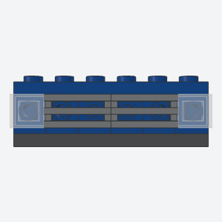
side_stud_lightsa 6-wide truck's front course, square headlights in its corners and a grille between, all on bricks whose studs face the front.
The flush front face of a 6-wide truck or van: headlights in the corners and a grille between, no studs showing.
Note: Compared with headlights: headlights uses a headlight brick (4070) with a round tile at each end and plain bricks between, so the middle shows brick; this one puts a side-stud brick under every stud and covers the face: square clear tiles at the corners and grille tiles spanning the studs between, so the whole course is flush. It's the front-facing twin of tail_lights. Found while testing: the library's headlights floats its lenses at z=6 (fine at z=1), so four_wide_car builds its lights this way instead.
x, y, z, width, color, lens, grillebatch-13/side_stud_lights.py87087 + 3070b + 2412b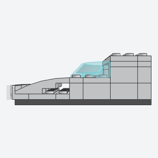
curved_wedge_nosethe rounded, sloping nose of a high-speed train, curved slopes rising from headlights on brackets into a curved canopy windscreen.
The nose of a modern high-speed or commuter train, a smooth curve from the headlights up through the cab glass.
Note: The book uses 4 x 4 curved wedges (45677) and long double-curved wedges; here three curved slopes 4 x 2 (93606) give the rise, and the canopy is the curved windscreen 3 x 6 (62360), which was never made in Trans Black (Trans Light Blue default).
x, y, z, color, glass, lensbatch-13/curved_wedge_nose.py93606 + 62360 + 99780 (some of its parts weren't confirmed from the book; I'd pin them when writing it)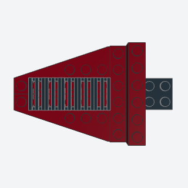
tapered_hood_wedgesa vintage car's long hood that narrows toward the grille, two wing plates laid side by side with their slanted edges outside, louvers down the middle.
The long hood of a 1930s car or vintage truck that narrows toward the radiator.
Note: Wing plates 3 x 6 (or 3 x 12) instead of the book's wedges; the 3 x 8 wings (3544/3545) were only made in grays, black, white, and tan, so length 8 isn't offered. The 3 x 6 left wing's body is 2.95 studs across, so it sits 0.05 in to put its studs on the grid.
x, y, z, length, color, louversbatch-13/tapered_hood_wedges.py54384 + 54383 + 47397 + 47398 (some of its parts weren't confirmed from the book; I'd pin them when writing it)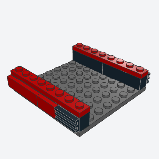
snot_side_skirta racing-scale car's flush lower sides, long tiles standing on the side studs of the sill course, with a grille tile as the intake at the back end.
The smooth lower sides of an 8-wide sports car below the doors, with an intake ahead of the rear wheel.
Note: VARIANT of bracket_side_panel (a 2-stud-tall panel on brackets): here one course of side-stud bricks carries tiles on edge and a grille intake, a skirt a brick tall. The book clips its tiles into pins in Technic sill holes; that clip path has no clean connector match here, so the method moved to side studs.
x, y, z, length, width, color, skirt, intakebatch-13/snot_side_skirt.py30414 + 2431 + 2412b (some of its parts weren't confirmed from the book; I'd pin them when writing it)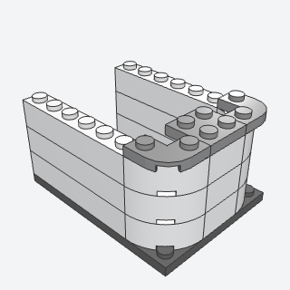
rounded_car_endthe smooth rounded corners at the end of a loco or passenger car, quarter-round bricks stacked at each corner and a cap of round-corner plates.
The rounded end of a passenger car, loco, tram, or bus, so the body doesn't end in square corners.
Note: 85080 and the round-corner plate 79491 turn differently: at rot=0 the brick's round side is at +x, +y and the plate's at +x, -y.
x, y, z, rows, color, capbatch-13/rounded_car_end.py85080 + 79491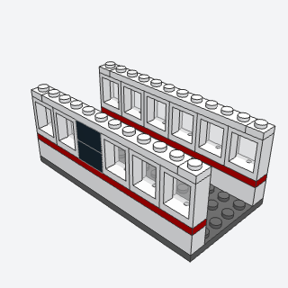
window_bandthe long run of windows down a passenger car's or bus's side, windows side by side over a wall with a colored stripe, a plate course over them, and dark posts where the doors go.
The long band of windows along a passenger car, tram, or bus, with a stripe under it and posts at the doors.
Note: VARIANT of the window band inside train_carriage: this is one side on its own, for any length, with a stripe course and door bays, so buses and trams can use it.
x, y, z, length, color, stripe, post, doorsbatch-13/window_band.py60592c01 + 3666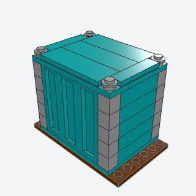
shipping_containera 20-foot freight container for a flat wagon, a truck bed, or a port stack, corrugated panel sides on a plate base that lifts off.
Cargo for a flat wagon, truck bed, or port stack: a container that lifts off and stacks.
Note: Both ends are closed brick walls: the book's door leaves on clips aren't modeled.
x, y, z, color, postbatch-13/shipping_container.py23405 + 3036 + 3005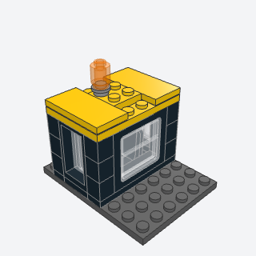
lift_off_window_caba shunting loco's cab with glass on all four sides, built as one box with its roof that lifts off the cab floor to put the driver in.
The cab of a shunter or small loco: glass on four sides and a roof that come off as one box to seat the driver.
Note: Alternate, in place of flat_wagon: the wagon needs bogies, and the bogie, its wheels, and the bogie plate (38339, 38340, 18626) have no connector data here, so they float. VARIANT of lift_off_roof_seat: the whole glass box is the lift-off unit, a submodel. The book's windows are 1 x 6 x 2 train frames; here 1 x 4 x 3 and 1 x 2 x 3 train windows.
x, y, z, color, roof, lampbatch-13/lift_off_window_cab.py4033c01 + 4035c01 + 3032 (some of its parts weren't confirmed from the book; I'd pin them when writing it)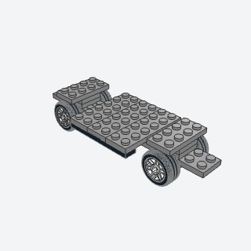
vintage_chassisthe long, narrow frame of a 1930s car, a 2-wide spine with a T across each axle, white-wall wheels, and running boards hung between the wheels.
The frame of a 1930s car or vintage fire engine: narrow spine, wheels and fender T's, running boards between the wheels.
Note: Combines long_hood_vintage_chassis and running_board. The book's spoked wheels (30155) have no connector data, so white 14 mm rims stand in as white-walls. The fender T's stand two plates up to clear the tires. The book's pinned-on rear module is not modeled.
x, y, z, length, color, board, rimbatch-13/vintage_chassis.py4600 + 11208 + 3020 + 3795 (some of its parts weren't confirmed from the book; I'd pin them when writing it)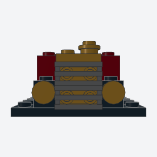
vintage_radiatorthe tall brass radiator of an early car or fire engine, a gold bracket faced with grille tiles, a gold cap on top, and a brass lamp each side.
The face of a vintage car or early fire engine: a tall brass radiator with a filler cap and brass lamps.
Note: Combines brass_radiator and chrome_grille_vintage: pass brass="Light Bluish Gray" for a chrome grille.
x, y, z, brass, core, lamp_bodybatch-13/vintage_radiator.py99207 + 2412b + 98138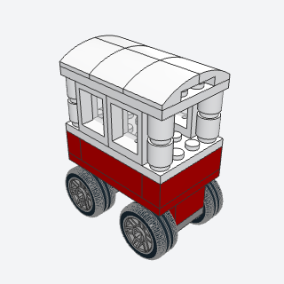
street_carta food or popcorn cart on four small wheels, a counter with a glass display, and a peaked canopy on four posts.
A popcorn, ice cream, or food cart for a street or park scene.
Note: The canopy stands on posts of round bricks, not the book's bars, and the wheels are 14 mm rims, not spoked ones (no connector data).
x, y, z, color, canopy, trim, rimbatch-13/street_cart.py4600 + 60592c01 + 3062b + 15068 (some of its parts weren't confirmed from the book; I'd pin them when writing it)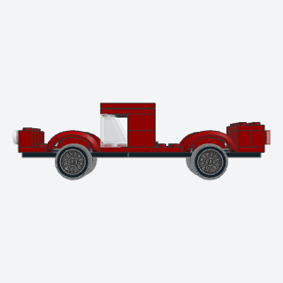
four_wide_cara whole small city car for one figure, sized by the 4-wide rules: wheels in arches on a 2-wide spine, a floor, a windscreen with a roof, a seat, and lights front and back.
A whole small city car in one call, sized by the 4-wide rules, for a street scene or a starting point to restyle.
Note: The books have no 4-wide car: this is built from the width arithmetic (section 3 of the research) with car_wheels' 4-wide running gear. It calls windscreen and tail_lights from the library; its headlights are built inline because the library's headlights floats its lenses at this height.
x, y, z, color, chassis, glass, rimbatch-13/four_wide_car.py4600 + 11209 + 98282 + 3823 (some of its parts weren't confirmed from the book; I'd pin them when writing it)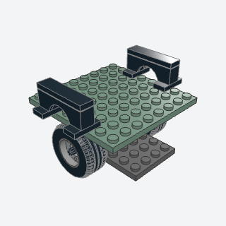
offroad_fender_flarea chunky arch over each wheel that stands half a stud proud of a boxy body's side, set out on jumper plates.
The chunky fender flares of an off-roader or rally car, standing half a stud out over each wheel.
Note: VARIANT of jumper_offset: jumpers laid across the body's edge carry a 1 x 4 arch half a stud outside the side. The book's exact arch piece wasn't confirmed.
x, y, z, width, colorbatch-13/offroad_fender_flare.py3794b + 3659 (some of its parts weren't confirmed from the book; I'd pin them when writing it)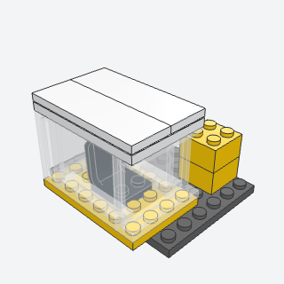
glass_box_cabthe all-glass operator's cab of a crane, reach stacker, or digger, clear panels on every side of a small plate, a seat inside, and a tiled roof, built apart and set on the machine.
The all-glass operator's cab of a crane, reach stacker, or digger, set off to one side of the machine.
Note: The book uses corner windscreen panels; here clear panels 1 x 4 x 3 all round. It's a submodel, placed on any studs, so it can hang over the deck's edge (the example) or sit on a bracket.
x, y, z, color, glass, roofbatch-13/glass_box_cab.py60581 + 3032 + 4079 (some of its parts weren't confirmed from the book; I'd pin them when writing it)